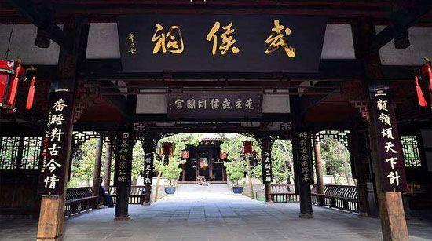

武侯祠
全国重点文物保护单位，国家AAAA级旅游景区，国家一级博物馆。
成都武侯祠位于四川省成都市南一环武侯祠大街，是中国唯一的君臣合祀祠庙，由刘备、诸葛亮蜀汉君臣合祀祠宇及惠陵组成。

公元二三四年八月，诸葛亮因积劳成疾，病卒于北伐前线的五丈原（今陕西省宝鸡市岐山县城南约20公里），时年五十四岁。诸葛亮为蜀汉丞相，生前曾被封为“武乡侯”，死后又被蜀汉后主刘禅追谥为“忠武侯”，因此历史上尊称其祠庙为“武侯祠”。全国最早的武侯祠在陕西省汉中的勉县（沔县），但目前最有影响的是成都武侯祠。
据《三国志》的记载，刘备于公元223年病故白帝城之后，灵柩运回成都，下葬于此，史称惠陵。而按照汉制，有陵必有庙，所以在同时期，就有了汉昭烈庙诞生。大约在南北朝时期，成都武侯祠与惠陵、汉昭烈庙合并一处。
现分文物区、园林区和锦里三部分，面积230亩（15万平方米）。 根据武侯祠新 的规划内容，武侯祠将对这三个区域进行更加合理的功能区划，分为三国历史遗迹区、锦里民俗区、三国文化体验区三大板块。